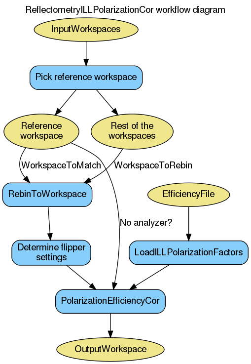

\(\renewcommand\AA{\unicode{x212B}}\)
ReflectometryILLPolarizationCor dialog.
Table of Contents
| Name | Direction | Type | Default | Description |
|---|---|---|---|---|
| InputWorkspaces | Input | str list | Mandatory | A set of polarized workspaces, in wavelength. |
| OutputWorkspace | Output | WorkspaceGroup | Mandatory | A group of polarization efficiency corrected workspaces. |
| SubalgorithmLogging | Input | string | Logging OFF | Enable or disable child algorithm logging. Allowed values: [‘Logging OFF’, ‘Logging ON’] |
| Cleanup | Input | string | Cleanup ON | Enable or disable intermediate workspace cleanup. Allowed values: [‘Cleanup ON’, ‘Cleanup OFF’] |
| EfficiencyFile | Input | string | Mandatory | A file containing the polarization efficiency factors. |
This algorithm is an ILL specific wrapper around PolarizationEffiencyCor. It is typically run in reflectometry reduction workflow between ReflectometryILLSumForeground and ReflectometryILLConvertToQ.
The algorithm accepts a list of workspace names as InputWorkspaces. Thus, the workspaces have to be in the analysis data service. One to four workspaces can be named. If only a single workspace is given, it is treated as the direct beam.
The algorithm loads the polarization efficiencies from EfficiencyFile. This file should be in the ILL format as LoadILLPolarizationFactors is used for loading.
The first workspace in InputWorkspaces is picked as a reference. The instrument configuration is extracted from the sample logs of this workspace. Further, this workspace is used as WavelengthReference for LoadILLPolarizationFactors. To make sure the wavelength axes of the rest of InputWorkspace comply, they are run through RebinToWorkspace, the reference workspace being WorkspaceToMatch.
Finally, the algorithm extracts the flipper configurations from the input workspaces, reorders the workspaces accordingly and calls PolarizationEffiencyCor. OutputWorkspace is the workspace group returned by PolarizationEffiencyCor.
The following diagram shows the workflow of this algorithm:
Example - analyzerless corrections
# Use same foreground and background settings for direct and reflected
# beams.
# Python dictionaries can be passed to algorithms as 'keyword arguments'.
settings = {
'ForegroundHalfWidth':[5],
'LowAngleBkgOffset': 10,
'LowAngleBkgWidth': 20,
'HighAngleBkgOffset': 10,
'HighAngleBkgWidth': 50,
}
# Direct beam
direct = ReflectometryILLPreprocess(
Run='ILL/D17/317369.nxs',
**settings
)
directFgd = ReflectometryILLSumForeground(direct)
# Reflected beam. Flippers set to '++'
reflected11 = ReflectometryILLPreprocess(
Run='ILL/D17/317370.nxs',
Measurement='ReflectedBeam',
**settings
)
reflectivity11 = ReflectometryILLSumForeground(
InputWorkspace=reflected11,
DirectForegroundWorkspace=directFgd,
DirectLineWorkspace=direct,
WavelengthRange=[2, 15],
)
# Reload the reflected be. We will fake the '--' flipper settings
reflected00 = ReflectometryILLPreprocess(
Run='ILL/D17/317370.nxs',
Measurement='ReflectedBeam',
**settings
)
reflectivity00 = ReflectometryILLSumForeground(
InputWorkspace=reflected00,
DirectForegroundWorkspace=directFgd,
DirectLineWorkspace=direct,
WavelengthRange=[2, 15],
)
# Overwrite sample logs
replace = True
logs = reflectivity00.mutableRun()
logs.addProperty('Flipper1.state', '-', replace)
logs.addProperty('Flipper1.stateint', 0, replace)
logs.addProperty('Flipper2.state', '-', replace)
logs.addProperty('Flipper2.stateint', 0, replace)
# Polarization efficiency correction
# The algorithm will think that the analyzer was off.
ReflectometryILLPolarizationCor(
InputWorkspaces='reflectivity00, reflectivity11',
OutputWorkspace='pol_corrected', # Name of the group workspace
EfficiencyFile='ILL/D17/PolarizationFactors.txt'
)
# The polarization corrected workspaces get automatically generated names
polcorr00 = mtd['pol_corrected_--']
polcorr11 = mtd['pol_corrected_++']
# The output is almost the same as from ReflectometryILLSumForeground
# except for small difference due to the polarization corrections.
print('Histograms in 00 workspace: {}'.format(polcorr00.getNumberHistograms()))
print('Histograms in 11 workspace: {}'.format(polcorr11.getNumberHistograms()))
print('X unit: ' + polcorr00.getAxis(0).getUnit().unitID())
Output:
Histograms in 00 workspace: 1
Histograms in 11 workspace: 1
X unit: Wavelength
Categories: AlgorithmIndex | ILL\Reflectometry | Workflow\Reflectometry
Python: ReflectometryILLPolarizationCor.py (last modified: 2020-08-11)
{kind=link}